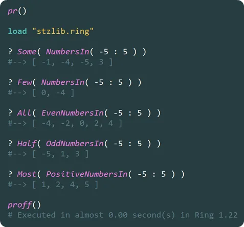

Probabilistic Quantifiers in Softanza: Natural Proportions Meet Logical Precision
Softanza introduces probabilistic quantifiers like Few(), Some(), Most(), and All(), allowing for more intuitive data manipulation by reflecting natural language. These quantifiers map conversational terms to precise proportions, making code both expressive and clear.
par Mansour Ayouni · dans le dépôt depuis le 2025-01-13 · essai de fonction · domaine Numérique et optimisation
Cet article est écrit en anglais, comme la bibliothèque.
A continuous path leading toward a grand pyramid structure.
Basic Examples
Here’s how these quantifiers can be used in practice:
load "stzlib.ring" ? Some( NumbersIn( -5 : 5 ) ) #--> [ -1, -4, -5, 3 ] ? Most( PositiveNumbersIn( -5 : 5 ) ) #--> [ 1, 2, 4, 5 ]
illustration
Each probabilistic quantifier corresponds to a default proportion of items:
- Few() → 10%
- Some() → 30%
- Most() → 90%
You can also customize these proportions using commands like SetFew(0.15) or SetMost(0.85).
The Probabiliistic Continuum
These quantifiers form a continuum:
No() → Few() → Some() → Half() → Many() → Most() → All()
They’re especially powerful when used in probabilistic and random contexts, like so:
SetSome(0.4) ? Some( RandomNumbersIn(1:10) ) #--> [ 5, 2, 7, 9 ] ? Few( RandomNumbersInU(1:10) ) # "U" for Unique items #--> [ 1, 4 ]
illustration
For completeness, the All() and No() quantifiers are straightforward:
- All() returns all items in a list.
- No() returns an empty list.
Example:
? All([ "A", "B", "C" ]) #--> [ "A", "B", "C" ] ? No([ "A", "B", "C" ]) #--> []
exécuté le 2026-10-08 20:42 au commit 4a184e6f0 : a tenu sa promesse
A Sense of Semantic Beauty
For semantic convenience, alternative function names like AllOf(), NoOne(), and NoOneOf() are provided, making the expressions more natural:
Them = [ "Andy", "Bill", "Chris" ] ? AllOf(Them) #--> [ "Andy", "Bill", "Chris" ] ? NoOneOf(Them) #--> [ ]
exécuté le 2026-10-08 20:42 au commit 4a184e6f0 : a tenu sa promesse
Softanza also supports fluent forms of these functions, which can enhance code readability. By using the Q() suffix, we get more natural expressions:
MyExamNotes = [ 12, 17, 18, 16, 19 ] Them = MyExamNotes # Semantic alias for clarity Average = 10 ? AllOfQQ(MyExamNotes).ArePositive() #--> TRUE ? AllOfQQ(Them).AreGreaterThan(Average) #--> TRUE
illustration
NOTE: The
Q(aList)function promotesaListto astzListObject, andQQ(aList)promotes it to a specific type of Softanza list, likeQQ([1, 2, 3]), which returns astzListOfNumbersobject. This allows the use of specialized functions likeArePositive(),AreGreaterThan(), etc.
Logical Magic with Quantifiers
I'll show you the case of NothingIn() quantifier, which is an exact alternative of the No() quantifier we saw earlier.
I’ll prefix it with QQ() because I’m working with a list of email addresses and want to promote it to a stzListOfStrings object to check the emails against a regular expression pattern using the Macth() function.
Now, here’s where it gets even more exciting—I’ll add the magical X() suffix!
The X() suffix offers a powerful mechanism to express logical statements declaratively and verify them directly. In this case:
- NothingInQQX() checks whether none of the elements in the list satisfy a condition.
- EverythingInQQX() checks whether all of them do.
Here’s an example of how it works:
? NothingInQQX([ "aee@net", "@com.com", "--?mail@org" ]).MatchesX(rxp(:eMail)) #--> TRUE # No element in the list matches the email pattern. ? NothingInQQX([ "aee@net", "@com.com", "--?mail@org", "info@mail.com" ]).MatchesX(rxp(:eMail)) #--> FALSE # At least one element matches the email pattern. ? EverythingInQQX([ "hello@mail.com", "info@mail.org" ]).MatchesX(rxp(:eMail)) #--> TRUE # All elements match the email pattern. ? EverythingInQQX([ "hello@mail.com", "info@mail.org", "~;@com" ]).MatchesX(rxp(:eMail)) #--> FALSE # Not all elements match the email pattern.
illustration
This approach combines intuitive expression with precise logic, allowing for clear and concise condition validation.
NOTE: The
rxp(:email)utility returns the regular expression pattern for a valid email:"^[a-zA-Z0-9._%+-]+@[a-zA-Z0-9.-]+\.[a-zA-Z]{2,}$".
Conclusion
Probabilistic quantifiers in Softanza enhance coding fluency, bridging the gap between natural language and precise logic. They enable expressive, easy-to-read code while still maintaining the power of rigorous validation.
See them in action in Haro Notepad hereafter:

Citer
Mansour Ayouni. « Probabilistic Quantifiers in Softanza: Natural Proportions Meet Logical Precision ». Softanza narrations, 2025. https://mayouni.github.io/stzsite/fr/narrations/stz-probabilistic-quantifiers-narration.html
Exécuté au nom de Haro le 2026-10-08 20:42 dans la bibliothèque au commit 4a184e6f0, bloc après bloc dans un seul processus : 2 bloc(s) sur 6 ont tenu leur promesse ; les autres sont des illustrations. Le code des articles est du code Haro. Là où un article a été écrit avant que la langue prenne son nom actuel, le nom a été changé et rien d'autre. Genre, domaine et série lus dans le nom du fichier, année tirée du premier commit : dérivés, jusqu'à ce que l'article porte son propre en-tête. Le fichier sur GitHub(s'ouvre dans un nouvel onglet)